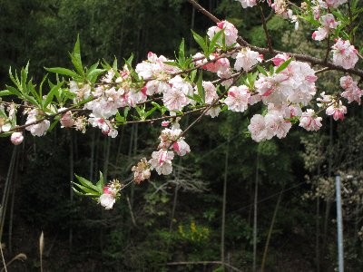
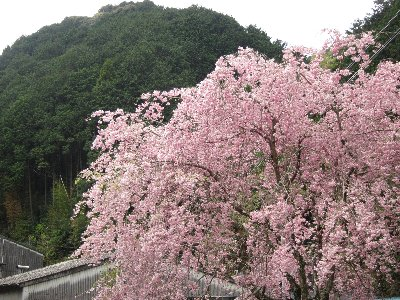

春の満観峰ハイク | 2012年4月 |
|---|---|
| 花見に続き、これも恒例になった満観峰ハイキング。「今年の足慣らしは満観峰から」を合言葉に、ここ数年やっております。 満観峰については、何回か書いていますので詳細は省きますね。過去レポ見てね。 ルートは前年同様に「宇津ノ谷峠道の駅」からです。このルートが、途中の集落周辺の花が綺麗だし、登りも他より緩めだと思われます。（登った。下った。がない） 今回は、いづみ、kusa、かむい、Yotta、アル兄、私の6名です。天気は薄曇り。 古い家並みの集落を歩いて行くと、綺麗な桃色の枝垂れ桜があります。周りのソメイヨシノと思われる桜は、すでに葉桜ですが、枝垂れ桜は最盛期ですね。この木の下で宴会やりたいぐらいです。 周りの景色を眺め、花を見るために足を止め、ゆっくりゆっくりと足を慣らしながら登っていきます。花も良いけど、古い家並みの集落も良いです。 アスファルトの道が終わり、あぜ道のような道にかわり、小川のほとりを歩き、ウグイスの鳴き声を聴き。暑くも寒くもなく、程よい気候が歩くのには気持ちがいいですね。 | |
|  春ですね〜 |  しだれ桜もキレイ〜 |
| 木々の間から、時折見える桜の木が、緑の中に映えるピンク色となって綺麗です。山の中に、時々一本だけ桜の木があったりしますよね。これ、誰かが植えているのかな〜 おしゃべりしながら登り、気が付けば山頂です。 余談ですが、この時のおしゃべり内容は、どんなジャムが美味しいかって事で盛り上がり、余計にお腹を空かせました。（山でどんな果実を育てたらいいか）果実酒の話も少々。 で、山頂です。本日、薄曇りで、残念ながら眺望はイマイチでした。伊豆半島も富士山も見えません。天気が良ければ最高なんですがね。山桜もすでに葉っぱの方が多っかたです。来るのが去年より遅いのかな。 | |
 このコースは茶畑の横を抜けていきます |  薄曇りだけど、おにぎりは美味しい！ |
| ハイカーが沢山います。座るところ無いな〜って歩いていたら、他のグループがテーブルを譲ってくれました。ありがたいですね。 カップラーメンを食べているグループや、鍋をやっているところもあり、山頂は賑やかです。鍋はやってみたいですね。 我々は、おにぎり部らしく、手作りおにぎり持参です。なんてことはないおにぎりですが、歩いた後に外で食べるおにぎりは最高に美味しいです。ご飯を美味しく食べられるって良いですね。 お昼食べて、ちょっとしゃべったら下山しました。 さあ、足慣らしは完了（？）です。次は何かな？(笑 | |
| コメント＆写真 by べっしー | |